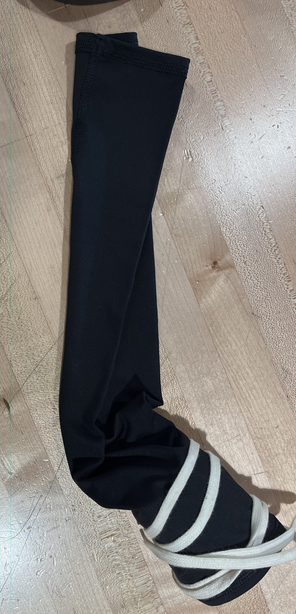
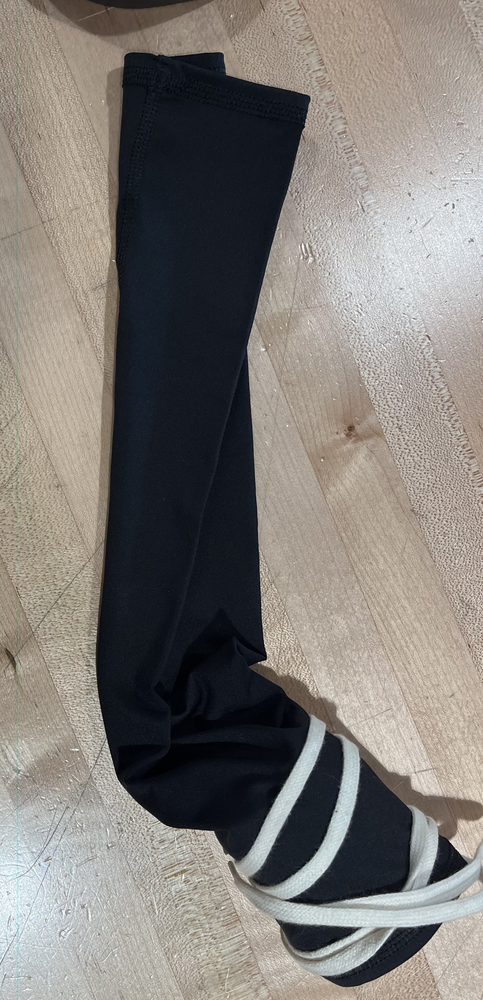

PLTW Capstone: Testing Implementation and Analysis
1. Test Execution Documentation
12/30/24- Christopher Garcia uses the prototype in a humid area while playing basketball to check the change in the sleeve, none shown.
2/13/25- Our first test was handled within a controlled environment within a building as this is where we intend our product to be used the most. The tester used the product for 10-15 minutes and reported that it felt very comfortable. The only issue they seemed to have was the fact that the inner wrist insulation would sometimes slightly down which was a little awkward to re-adjust for the tester.
2/17/25- Our second test was handled similarly but over a longer period of time being 30 minutes. Most of the feedback was similar; the tester reported a similar issue with the inner wrist cushion however to a much lesser extent.
2/20/25- Our final tester able test for around 50 minutes. In this test the user reported that our product was very comfortable and hoped to be able to use it for long writing assignments. No issue with the cushion reported, it seems to vary with the size of a person's forearm/wrist.
Qualitative data: No quantitative data available due to the nature of our project. Our qualitative data was gathered through our testing, some of it included praise for our product’s comfortability as well as ease of use. Some feedback received was the fact that the inner wrist component would move around very slightly as well as it depending on the size of the forearm while being used which caused some of our testers to feel a bit uncomfortable by having to re-adjust it once in a while. We were also recommended to remove some of the fabric in order to not fully cover the arm as the part that fully covers the arm does not provide much support and instead just causes heat to build up in the area.
Prototype performance against design specifications: Our prototype performed quite well even without a glove, it was stable and offered a comfortable experience for our users with little to no complaints.
Evidence-based conclusions and recommendations: from our testing and feedback we could improve our project to encompass more forearm sizes, but the movements in the inner wrist component were very minimal which our testers reported. We recommend the product to be used by a person with a smaller to medium sized forearm as it fits perfectly for those sizes.
Environmental conditions during testing Team members present and roles: Humid conditions-Christopher (tester and documenter) Windy and Chilly conditions-Christopher (tester and documenter) Room temperature and controlled-Christopher (tester) Noah (documenter)
2. Data Analysis
Quantitative Analysis (not possible given the nature of our project)
From our data we were able to analyze the fact that our prototype was very successful but we look to improve it given the feedback we received from testers. These are just small changes considering how well received our prototype was but the quality of life changes should allow our product to be that much better. We will also keep ourselves. open to any further improvements possible to our product.
3. Results Presentation
 


The images above demonstrate a timeline of our prototype to where it is as of now, we will obviously keep improving as needed but this provides a baseline as to where our group is at now.
All tests were conducted within a controlled environment with no breaches of safety at any point. Adittionaly, No anomalies occurred during testing which allowed for a very smooth process for both us and our testers.
Compared to our design we lacked a glove component which seemed to have no glaring negative effects on our users' experiences.
User feedback was very positive with feedback indicating very slight movement in the inner wrist component which would only need to be slightly adjusted by users.
4. Conclusions and Recommendations
Our prototype performed very well in its testing and held up in almost all varied environments which surprised us in a very good way. This meaning that, the feedbackof our prototypes were very positive where we expected a more critical reception of them by our testers.
Overall, our results were very positive from feedback received by testers and users alike. We look forward to improving further on our final product in order to ensure our users receive the best experience as well as a product they want to use in everyday life. We want our product to be versatile and easy to use. For our recommendations of use we so far recommend use times to be a maximum of an hour as that is the extent of our longest test that still provided a comftorable experience for users, since we have not tested any periods of time longer than an hour. We also recommend our users to use the sleeve in a more stable environmet, while it did prove to hold very well in more extreme environments we found that it is best used in an office or home setting.
Daily Updates 2/11/25-2/24/25
2/11/25
We finalized our prototype to begin proper testing in which we can use to begin getting feedback.
2/13/25
This was our first test being done within a controlled environment and although it was for a short time it helped create a baseline for us to know where to begin working.
2/18/25
We documented the feedback from our previous tests and used it to begin working on improving the wrist support.
2/20/25
My group tested the current prototype for our wrist brace on our classmate, Brian, which he used for most of the class period and gave us the data needed to improve. The test provided us information that the sleeve works without shifting but depends on the person's forearm which leads to us needing to work to make it useful for everyone.
2/24/25
Today I started to work on the Testing Implementation and Analysis document and then update my website by including the daily updates and molding process.